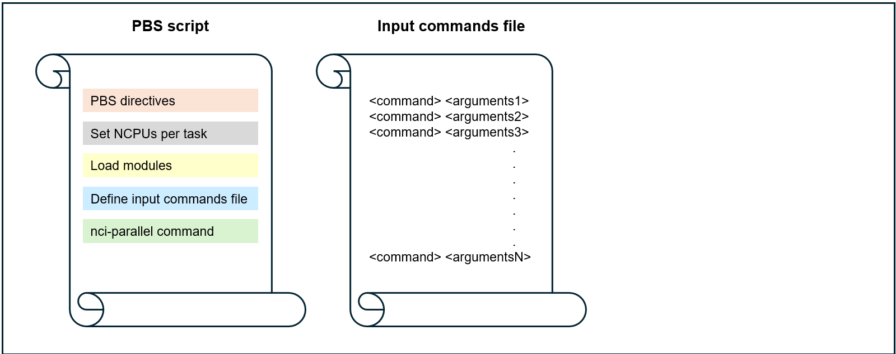
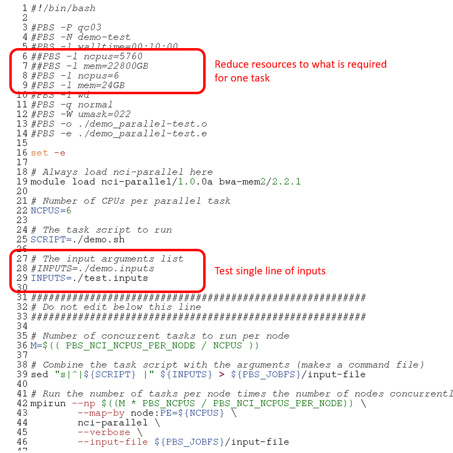

Running embarrassingly parallel jobs on Gadi
Introduction
In this section, we will discuss how you can run embarrassingly parallel jobs on Gadi using the nci-parallel utility in place of the Artemis job array method.
The main challenges users may face adapting Artemis workflows to Gadi are:
- Job arrays not supported on Gadi
- Gadi walltime limit of 48 hours
- Adjusting PBS directives to suit Gadi requirements and queue structure
- Lack of internet access for Gadi compute nodes
- Data transfer
- Understanding NCI accounting of KSU, disk and iNode limits
- Automatic 100-day Gadi /scratch purge policy
- Software installation and version upgrades on Gadi
In this section, we will look at the first challenge on this list. For the remaining challenges, please visit the specific linked content. Recordings of past information sessions are available for some topics.
Embarrassingly parallel jobs on Gadi
A parallel job is a job that is broken down into numerous smaller tasks to be executed across multiple processors, nodes, or cores simultaneously to speed up computations. For example, operating the same analysis over different input files, over different parameter values, or by dividing a large computational task into smaller subtasks that run concurrently, using shared memory or distributed computing.
Embarrassingly parallel jobs are a specific type of parallel job where the tasks are completely independent of each other and do not require inter-process communication or shared memory. These types of jobs can be trivially parallelized by running each task separately on different cores or nodes.
On Artemis, we could use the #PBS -J <range> directive to submit arrays of embarrassingly parallel tasks. On Gadi, job arrays are not supported. In order to simplify embarrassingly parallel jobs without the use of arrays, NCI have created a tool nci-parallel to be used with OpenMPI for distributing parallel tasks across compute resources on a Gadi queue, within a single PBS job.
Using nci-parallel
Use of this utility will typically require 2-4 job files:
- PBS script
- Contains PBS directives to launch the parallel job
- Sets the number of CPUs to assign to each task
- Specifies the inputs (job file 2) and/or task script (job file 3)
- Runs
openmpiandnci-parallelto distribute concurrent tasks across the resources requested in the directives
- Input arguments file or command file
- A text file that provides a new set of arguments/commands per line
- Each line of the input arguments file/commands file is used as the input for a separate parallel task
- (optional) Task script
- The script file (eg Python, bash) that contains the commands to run the job
- Uses the arguments provided by the input arguments file/commands file
- For some tasks where the command fits on a single line, a task script may not be required and the commands file may be sufficient
- (optional) Script to make the input arguments/commands file
- For complex arguments/commands files, where the creation of these cannot easily be achieved with a simple
forloop or similar on the command line, an optional fourth script may be required to make the input arguments/commands file - For example, where the inputs are derived from a complex metadata file or require some further manipulation prior to generating the input/arguments list
- A
make inputsscript that is saved alongside the parallel script collection for the job is useful for reproducibility and portability
NCI provides an example where the input to the task script (in this case, named test.sh) is a single numeric value. The command test.sh <value> is included in the input argument file, as many times as needed for the job (in this case, 1000). Another way to do this (demonstrated in the simple example further below) is having an input argument list that does not include the name of the script file. The name of the script file is instead included within the PBS script. Both methods achieve the same result, the user can choose whichever they prefer.
Option 1: task script call with arguments is provided in a command file

Option 2: task script call is combined with arguments by the PBS script

Option 3: no task script, simple one-line command and arguments provided in a command file

Before submitting your parallel job, always check that the task script reads in the input arguments correctly and that the binding of tasks to resources is correct.
Simple example
Below is a trio of job files to run a very simple demonstration of nci-parallel.
Each parallel task requires only 1 CPU. The input file demo.inputs contains 12 input arguments, and the PBS directives request 12 CPU, so this means all tasks will execute concurrently, ie at the same time. If 6 CPUs were requested for the job, then the first 6 tasks would run, and the next tasks would be executed as those initial tasks completed, ie only up to 6 tasks could run concurrently.
Job file 1: PBS script that launches the parallel tasks
#!/bin/bash
#PBS -P qc03
#PBS -N demo
#PBS -l walltime=00:05:00
#PBS -l ncpus=12
#PBS -l mem=12GB
#PBS -l wd
#PBS -q normal
#PBS -W umask=022
#PBS -o ./demo_parallel.o
#PBS -e ./demo_parallel.e
set -e
# Always load nci-parallel here
module load nci-parallel/1.0.0a
# Also load tool modules here, they will be inherited by the parallel tasks
# modules...
# Number of CPUs per parallel task, also inherited by the parallel tasks
# BE SURE TO MAKE YOUR COMMANDS/TASKS SCRIPT MAKE USE OF THIS MANY CPU
NCPUS=1
# The task script to run
SCRIPT=./demo.sh
# The input arguments list
INPUTS=./demo.inputs
#########################################################
# configure parallel
#########################################################
# Number of concurrent tasks to run per node
M=$(( PBS_NCI_NCPUS_PER_NODE / NCPUS ))
# Combine the task script with the arguments (makes a command file)
sed "s|^|${SCRIPT} |" ${INPUTS} > ${PBS_JOBFS}/input-file
# Run the number of tasks per node times the number of nodes concurrently with mpi
mpirun --np $((M * PBS_NCPUS / PBS_NCI_NCPUS_PER_NODE)) \
--map-by node:PE=${NCPUS} \
nci-parallel \
--verbose \
--input-file ${PBS_JOBFS}/input-fileObserve the equations in the script above:
M=$(( PBS_NCI_NCPUS_PER_NODE / NCPUS ))
M = 48 / 1
M = 48- The value of
Msets the maximum number of tasks that can run per node in the requested queue, based on the chosen provision of CPU per task PBS_NCI_NCPUS_PER_NODEis an environment variable that is set based on the queue, in this case thenormalqueue which has 48 CPUs per node- The value of the bash variable
NCPUSis set by the user in the PBS script, and is distinct from the environment variablePBS_NCPUSwhich is the total CPUs requested by the job in the directive#PBS -l ncpus=<num>
mpirun --np M * PBS_NCPUS / PBS_NCI_NCPUS_PER_NODE
mpirun --np 48 * 12 / 48
mpirun --np 12mpirunis used to run parallel jobs with the MPI (Message Passing Interface) framework. It allows you to execute the program across multiple processors or nodes. When you load thenci-parallel/1.0.0amodule, openmpi v. 4.1.0 is loaded as a requirement--npspecifies the number of processes for MPI to run in parallel. This is determined by the number of tasks that can run on each node (M), and the number of nodes requested (requested CPUs divided by number of CPUs per node in that queue)
--map-by node:PE=${NCPUS}- mapping by node means that processes will be distributed evenly across all nodes requested by the job. Mapping by NUMA node will be described in a later section
PE=${NCPUS}(‘processing elements’) indicates that each distributed task will be allocated${NCPUS}CPUs, which is a user-defined variable
nci-parallel \
--verbose \
--input-file ${PBS_JOBFS}/input-filenci-parallelis the application being run bympirun--verboseand--input-fileare parameters for thenci-paralleltool, runnci-parallel -hto see other available parameters/flags- The input file is where
nci-parallelreads the task commands from; each line of the file is treated as a separate command to be ‘farmed out’ as an independent parallel task to the resources reserved for the job. If the number of lines in the input file exceeds the number of processes MPI can run in parallel/simultaneously (ie, the value given tompirun --np <value>), the commands are assigned to resources in order, starting from line 1, until all resources are in use. As a running task completes, the next task in the list is assigned to those now-free resources, until either all input lines have been assigned to resources and the tasks complete, or the job meets a fatal error (such as out of walltime).
Test your understanding:
- How many tasks could run per normal node if NCPUS was set by the user as 6?
normal node
M=$(( PBS_NCI_NCPUS_PER_NODE / NCPUS ))
M = 48 / 6
M = 88 6-CPU tasks per normal node
- How many 6-CPU tasks could run concurrently if this job requested 10
normalnodes?
normal nodes
mpirun --np M * PBS_NCPUS / PBS_NCI_NCPUS_PER_NODE
mpirun --np 8 * 480 / 48
mpirun --np 8080 concurrent 6-CPU tasks on 10 normal nodes
Job file 2: the input arguments file
A plain text file that contains the arguments for each parallel task, one per line. Since this is a simple file it can be made easily on the command line. More complex arguments/commands files may require a helper make inputs script as a fourth member of the file set for the parallel job.
The input arguments file for this demonstration job was simply made by:
shuf -i 1-100 -n 12 > demo.inputs51
20
16
92
12
99
54
48
6
44
36
56Job file 3: the task script
A script that reads in the single argument and executes the command. Note: this script must be executable! If not, the job will fail with permission denied errors.
#!/bin/bash
argument=$1
echo My favourite number is ${argument}Now to run the parallel job:
qsub demo_run_parallel.pbsNote that unlike job arrays, this is a single job so when you run qstat, you will not see the square brackets denoting a job array that you are familiar with on Artemis. To qstat, it will appear as any other non-parallel job.
Checking a completed parallel job
Once the job completes, check the job logs. Since the task script in this example did not redirect the output, it was by default printed to the PBS .o job log:

Note that the order of the output differs from the order of the input. This is because the tasks are independent and executed in parallel - so it is not good practice to allow important output to be sent only to the .o log file like this! Always redirect your output!
Now for the .e log:
Each parallel task has a line containing information including the ID of the node it was run on, the individual task exit status, and the command that ran the task.
Always check the exit status from the PBS .o log AND the per-task exit statuses from the .e log! An exit status of 0 for the parent job does not mean all tasks completed without error. And of course, as always, check the outputs, as an exit status for both parent job and task still does not necessarily indicate a successful job.
Count the number of tasks with exit status 0 - this should equal the number of lines in your input arguments/command file:
grep "status 0" demo_parallel.e | wc -lIf the number if tasks with exit status 0 is less than the number of inputs, either the job has met a fatal error (and the PBS .o log will have a non-zero exit status), or some individual tasks have failed. If all tasks have started, they will have an exit status in the .elog, so you can retrieve the failed tasks to a new input file to be resubmitted (after first troubleshooting the error). For example:
grep -E "status [1-9]" demo_parallel.e | awk -F"status [0-9]+: " '{print $2}' > failed.inputIf however the tasks didn’t start for example the job exceeded walltime before they were allocated to resources, they won’t have an entry in the .elog:

To capture failed tasks as well as tasks that did not start, you would need to extract the lines from the original input file that do not have ‘exited with status 0’ within the .e log.
Checking the parallel job before submission
Before submitting your parallel job, always check that the:
- Task script reads in the input arguments correctly
- Task executes correctly with those provided arguments on the compute node
- Binding of tasks to resources is correct and appropriate for your job
1. Check that the task script reads in the input arguments correctly
To check that the task script reads in the arguments correctly, this need not be done on the compute nodes. You can run a quick test on the login node where your task script prints out the arguments it reads in from the input arguments file then exits before running any analysis.
Your code may already have a test condition; if so please run that prior to submitting the full parallel job.
If not, you can easily test the arguments for any type of script with the simple method below:
- The task script is edited to include print statements that check the arguments read in from the inputs file, followed by an
exitcommand - Run the task script on the login node, providing one line of the input arguments file as command-line argument
1. Edit the task script to print out the arguments that are read in
2. Run the task script on the login node with one line of the inputs
Once this check has proved successful, go on to check a single task running on the compute node.
2. Check that the task executes correctly with those provided arguments on the compute node
This second test will also help you with the third and final check of binding tasks to resources by the mpirun command.
Ideally, you have already performed benchmarking to determine appropriate resources for your job. If your tasks are long-running, you could choose to either subset the input for the test task, or allow the test task to run for just enough time to determine that the inputs and scripts are set up correctly. If you have not done prior benchmarking on a subset followed by a full task at the chosen resources per task, it’s preferable here to allow that test task to complete, even if it is long running. Allowing one task to fail now can give you the opportunity to debug and prevent your whole parallel workflow from failing, potentially costing many KSU - and your time and frustration!
In the below example, each task requires 6 CPU for approximately 5 minutes walltime.
First, delete or hash out the exit command if it is still present from the previous checking of input arguments. Then:
- Take the first line of the input arguments file as a ‘test’ inputs file
- Edit the PBS script to point to the test input file, and reduce CPU and memory to what is required for one task
- Submit the single task to the scheduler with the
qsubcommand
1. Create a single line test input
2. Edit the PBS script to point to the test input and reduce resources to one task

3. Submit the single task to the scheduler
qsub demo_run_parallel.pbsNote that the mpirun command and all other aspects of the PBS script remain the same as for the full parallel job.
Once the job completes, check the exit status in both logs as well as the job outputs.
3. Check the binding of resources to parallel tasks
This refers to how the tasks are distributed across resources by OpenMPI. At this point in your parallel job setup, you should have a good understanding of what resources are required per task from benchmarking, and have determined that your job scripts are set up correctly for an nci-parallel job.
Here we will review the mpirun command a bit more closely and look at two alternative ways you can map/bind tasks to resources.
The --map-by parameter in the mpirun command can map by node, socket, or NUMA nodes.
The example on the NCI page shows --map-by ppr:<value>:NUMA:PE:<value> and the simple example above shows --map-by node:PE=<value>. What’s the difference?
ppr stands for processes per resource, and specifies the number of tasks assigned to that resource, where ‘resource’ may be node, socket or NUMA node. A NUMA (Non-Uniform Memory Access) node/domain is a physical unit consisting of one or more CPU cores and the memory directly attached to them. CPUs can access the memory that is within the same NUMA node faster than memory from other NUMA nodes.
The mpirun command in the NCI example:
PBS_NCPUS=384
export ncores_per_task=4
export ncores_per_numanode=12
mpirun -np $((PBS_NCPUS/ncores_per_task)) \
--map-by ppr:$((ncores_per_numanode/ncores_per_task)):NUMA:PE=${ncores_per_task}Expands to:
mpirun -np 384/4 --map-by ppr:12/4:NUMA:PE=4
mpirun -np 96 --map-by ppr:3:NUMA:PE=4Remember, --np specifies the number of processes for MPI to run concurrently, in this case, 96 of the 1,000 input tasks can run at a time. Processes (tasks) per resource is 3 and the resource is given as NUMA. So the job will run 3 tasks per NUMA node, each with 4 (PE=4) CPU.
The Gadi queue structure page states there are 12 CPUs per NUMA node on the Cascade lake normal queue, so this job fits nicely on that architecture. What if you wanted to run tasks with more CPUs than available on a single NUMA?
For example, for 24 CPUs per task, the equation would yield:
mpirun -np $((PBS_NCPUS/ncores_per_task)) \
--map-by ppr:$((ncores_per_numanode/ncores_per_task)):NUMA:PE=${ncores_per_task}
mpirun -np 384/24 --map-by ppr:12/24:NUMA:PE=24
mpirun -np 16 --map-by ppr:0.5:NUMA:PE=24This job would fail with non-zero exit status and display the error “Your job has requested more processes than the ppr for this topology can support”.
For jobs where more CPU (or memory) is required per task than exists on a single NUMA node, the --map-by node:PE=<value> method shown in the simple example above can enable this. For tasks of 24 CPU on the normal, memory is obtained across 2 whole NUMA nodes. For tasks of 16 CPU each, CPU and memory is obtained from 2 NUMA nodes, and some NUMA nodes will provide memory and CPU to 2 different tasks. To assess the effect of this memory latency on your workflow, benchmarking is recommended.
Mapping by NUMA node only works if the remainder of ncores_per_numanode divided by ncores_per_task is zero. Assume you have benchmarked that your tasks achieve optimum efficiency with 8 CPU per task on the normal queue with 1 task running per NUMA node. 12/8 leaves a remainder of 4 so this binding is not possible. However, you can achieve the same by assigning ncores_per_task the same value as ncores_per_numanode, ie 12 in this example, to map 1 task per NUMA node. Then, define an additional variable within the PBS script with the value of 8, ensuring that the task script uses this variable, rather than ncores_per_task, as the number of CPUs to utilise.
What is the advantage to mapping by NUMA node? The CPU cores within a NUMA node can access the memory within that NUMA node more quickly than the memory located in other NUMA nodes. Your jobs may have improved performance, especially for memory-intensive applications, if the memory per task is within a single NUMA domain. As always, it is ideal to perform benchmarking to determine the optimal resource configuration for your workflow.
For more advanced applications where you are interested in which sockets and CPUs within the node your tasks are bound to, you can add the flag --report-bindings to the mpirun command. The example below shows the output of this flag (within the PBS .e job log) for a parallel job running 6 single-CPU tasks concurrently:
CPU efficiency
Benchmarking should initially be done on the single task, in order to optimise resource requests for the full job. In some cases, CPU efficiency can decline for parallel jobs, and this results in an increased walltime per task and overall SU cost for the job. Where possible, benchmarking tests should also be performed at scale, to assess any decline in performance when the workload is scaled up. This can enable you to further optimise, or allow for the decline in efficiency when requesting walltime, to prevent avoidable job failures due to running out of walltime.
For example, you have determined the optimum resources for your tasks to be 12 CPU and 48 GB mem, for just under 20 minutes. You have 1,000 tasks to run. This equates to 250 normal nodes. Prior to submitting a 20 minute 250-node job, you should:
- Test 4 tasks in a parallel job - that’s one full node. Does the CPU efficiency remain the same as benchmarked for the single task?
- Test a handful of nodes, say 10 - does the CPU efficiency remain the same as benchmarked, now 40 tasks are running concurrently?
- If so, go ahead and submit the remaining tasks (remember to remove the tasks already run through this benchmarking, if you have done this on full size inputs). If not, what happened to the walltime? If the efficiency loss was drastic and walltime much worse, consider reoptimising. If the decline was minimal, extrapolate from this to estimate the walltime required for the full job, potentially running a larger task lot first (for example the next 100 tasks in the input argument list) for more accurate extrapolation.
- Keep records of the benchmark runs and full run resources for future reference. We recommend the Gadi usage script which will summarise compute resources into a tab delimited table for ease of review and record keeping. If you prefer to rely on your Gadi job logs alone for long term records of your jobs usage, please ensure to back these up to RDS as they will be purged from scratch in time.
This may sound like a lot of extra work, but it could save a large amount of KSU as well as walltime and your own frustration in the long run. Understanding how well your workload scales to a parallel job is important prior to submitting a large multi-node job like this.
Walltime management and CPU utilisation
This section descibes one disadvantage of nci-parallel jobs compared to PBS job arrays, and how utilisation can be maximised and walltime minimised with a few management strategies.
In PBS job arrays, each subjob of the array is a discrete task consuming a chunk of resources that may or may not be on the same node as other subjobs of the array. When that subjob completes, those resources are returned to the cluster and become available for other jobs. As such, they are no longer consuming CPU hours and accruing resource usage to the user’s account. In contrast, nci-parallel reserves the entire collection of resources for all parallel tasks in the job as a single large chunk. This means that tasks that have completed while other tasks are still running are still consuming those resources (even though they are idle) and thus still being charged for.
Because of this, parallel jobs where there is a large distribution of walltime across the tasks are likely to result in poor efficiency and a lot of wasted resources. There are a number of strategies you can employ alone or in combination to mitigate this:
- Use the nci-parallel timeout parameter, to cap the amount of walltime per task. This will prevent unexpectedly long-running tasks from dragging out the walltime when all other tasks have completed. These tasks can then be resubmitted separately with longer walltimes.
- Request less resources than are required for all tasks to run in parallel so the amount of idle CPU while long-running tasks complete is reduced
- Use a loop for jobs with small numbers of parallel tasks, with varying walltime based on expectations for the task, adding a sleep within the submission loop
- Sort tasks by expected order of walltime, longest to shortest, and request resources such that less than the total number of tasks are running in parallel
- Group subsets of parallel tasks by expected walltime, and submit multiple separate parallel jobs, for example instead of one large job, run a “fast”, “medium” and “slow” job
The wastage of resources that can occur within parallel jobs with unequal task sizes is demonstrated in the figure below. In this example of 5 tasks, applying the second strategy on the list increases CPU utilisation but at the cost of increased walltime. By using both strategy two and strategy four together, the optimal CPU utilisation and walltme is achieved:
Memory management
The number of CPUs allocated to each parallel task is controlled by the user-defined Bash variable within the PBS script (NCPUS in the map by node example, and ncores_per_task in the NCI map by NUMA example). However, each of these parallel tasks has access to the total amount of memory on the node for jobs >=1 node, or to the job for jobs <=1 node.
To avoid memory contention, you should:
- Benchmark memory usage: Before running large-scale jobs, benchmark the tasks to understand their memory requirements. Monitor memory usage during execution using
nqstat_anuor a more advanced profiling tool, and check the completed job log. Use the peak memory requirement per task as the basis for requesting resources. - Enforce memory limits per task (if possible): If the tool allows, restrict each task’s memory usage in proportion to its CPU allocation. For example, for a 4 CPU task running on the
normalqueue, set a per-task memory limit of 4 * 4 = 16 GB within the task script to prevent excessive memory consumption.
If memory contention occurs, the first tasks to start will consume the available memory, while other concurrently running tasks that started later may run significantly slower or even fail due to memory exhaustion. Depending on the tool and workload, this could result in either individual task failures or a complete job failure.
Note: Mapping by NUMA node does not prevent CPUs from accessing memory from other NUMA nodes (‘remote memory’).
Example parallel jobs
Example 1: Genomics
Parallel processing in genomics can facilitate rapid processing of terabytes of raw DNA sequencing data. These workloads are highly amenable to parallel processing for 2 reasons:
- The same processing steps typically need to be run on many different samples
- Most of these processing steps can be further broken apart into smaller subtasks
By parallelising at the level of sample, we may have say 10 or 100 tasks in a parallel job, depending on the number of samples in the analysis. Yet if we break the processing steps each into smaller subtasks, we can then parallelise to a much higher level of throughput, number of samples * number of subtasks, which can easily order into the thousands.
One excellent example for how HPC and distributed computing can massively speed up processing is the case of mapping the DNA sequences to the reference genome. In sequencing projects, each sample may have a few hundred million DNA sequences. Users often map all of these in one job, that can take several hours in a multi-threaded job. However, since each DNA sequence is mapped independently to the reference, we can physically split the input into numerous smaller inputs and perform the mapping in parallel.
Say we have 100 samples, each with approximately 400 million DNA sequences requiring mapping to a reference file. To parallelise by sample, we could run 100 tasks concurrently. If we split the input into chunks of 10 million sequences, each sample would have 40 inputs, so we could run a parallel job with 100 * 40 = 4,000 tasks.
Assuming the tasks were benchmarked to perform optimally with 6 normal CPU and required 5 minutes walltime, to run all tasks concurrently would require 6 * 4000 = 24,000 CPU. This equates to 500 nodes, which exceeds the maximum nodes per job of 432 for the normal queue. We can add our benchmarking metrics into the SIH parallel job resource calculator which you can download here to help us select resources for this job.
By halving the number of nodes requested to 250, we halve the number of tasks that can run concurrently, so we would need to double the walltime:
250 nodes is a large chunk of resources, so possibly 1,000 tasks concurrently for 20 minutes on 125 nodes would be easier to schedule and result in less queue time. This is a massive speedup compared to the ~ 6-8 hours required to process all 400 million sequences in one task.
In practice, scaling this 100-sample mapping to 4,000 embarassingly parallel tasks does take a number of steps - but remember that it’s all worth it to achieve the vast speedup 😃
- Physically split the inputs into numerous smaller files (a 100-task job, parallel by sample)
- Check the logs and outputs to verify successful split job
- Use a helper
make inputscript to read the per-sample metatdata and combine it with each of the split input files into an input arguments file - Set up the task script to read the input arguments and run the mapping analysis
- Select resource directives with the help of the resource calculator, then submit the PBS script with
qsub - Check the logs and outputs to verify successful mapping job
- Merge the split data to a per-sample output file (another 100-task job, parallel by sample)
For this workflow, only the metadata and/or make inputs file would be edited each time the analysis was run on a new set of input samples, and the PBS script directives would be adjusted based on the number of tasks to be run. The mapping task script would not need to be edited between repeat jobs at all (aside from updated tool versions/parameters etc). So while it may seem complex to set up, the advantages for speedup, reproducibility and portability will save you much time in the long run. Ensure to back up your job files to RDS to avoid losing your hard work to scratch purge!
Artemis job array vs Gadi nci-parallel job
We won’t cover the details of splitting or merging here as that is domain-specific, but we will look at the job files required for the massively parallel mapping job on Gadi, as compared to the same analysis with job arrays on Artemis.
Assume that the same comma-delimited input arguments file has been created for both the NCI and Artemis job:

Note that the Artemis array job must be submitted 4 times, each with a different set of 1,000 tasks, in line with the maximum number of elements per job array on Artemis.
Observe the similarities and differences:
- Both workflows use the same analysis commands - for Gadi, the commands are in a different script to the directives, for Artemis, all is within the PBS script
- Both workflows read in the same variables from the same input arguments files, but use a slightly different command
- Both workflows request 6 CPU per task
- The Artemis memory and CPU directives are per task, where the Gadi memory and CPU directives request the total for all concurrently running tasks
- All tasks on Gadi are run in the same job, Artemis array requires batching
- Slight differences to the directives, as outlined in the section on Gadi PBS scripts compared to Artemis
- The Gadi PBS script has the
mpirunandnci-parallelcommand, where the Artemis job array script includes the-J <range>directive
As you can see from this example, porting an existing Artemis job array to Gadi is straightforward and requires little extra work.
Example 2: Calculation of pi
In this example we’ll run through a simple parallel workflow using a python script that leverages the multiprocessing library for internal concurrency. This script can also be submitted multiple times simultaneously to the queue either via Artemis job array or the Gadi equivalent: nci-parallel. This is a typical case for simulation style workflows, where a single script is run multiple times with varying parameters and each script instance uses multiple cores for its processing.
The script whatispi.py implements a monte-carlo estimation of pi by randomly generating points in a box and calculating the fraction of those points that lie within a circle enclosed by it.
The whatispi.py file is shown below. The higher the number of trials the closer the result should be to the true value of pi. This script is embarassingly parallel in that each instance of it can be run independently, the final estimate of pi across all independent runs is calculated by taking the weighted average of each of the independent estimates.
whatispi.py
import numpy.random as rng
import time
import sys
from multiprocessing import Pool
from numpy import power
def pi_run(num_trials):
"""Calculate pi based on points with a box and circle of radius 1
"""
r = 1.0
r2 = r * r
Ncirc = 0
for _ in range(num_trials):
x = rng.random()
y = rng.random()
if ( power(x, 2) + power(y, 2) < r2 ):
Ncirc += 1
pi = 4.0 * ( Ncirc / num_trials )
return pi
def cycle_pi(trials, noprocs=1):
"""calculate pi based on a set of trials.
-- trials: a large number representing points
-- noprocs: number of python processes used in simulation
"""
print("number of processes used: ", noprocs)
with Pool(noprocs) as pool:
pi_estimates = pool.map(pi_run, trials)
return pi_estimates
if __name__ == "__main__":
trials = list(map(int, sys.argv[2:]))
print("estimating pi based on", trials)
print(cycle_pi(trials, int(sys.argv[1])))Within the whatispi.py file above, some basic tools from Python multiprocessing library are used:
the Pool(noprocs) object creates a pool of Python processes. noprocs is the number of worker processes to use. If processes is None then the number returned by os.cpu_count() is used. This is the first argument to our script.
The pool.map(pi_run, trials) uses the pool to map a defined function (pi_run) to a list/iterator object (trials).
To run our estimation script with a pool of 2 CPUs with 3 trials of varying length, we would use:
python whatispi.py 2 1000 2000 3000this would produce the output:
estimating pi based on [1000, 2000, 3000]
number of processes used: 2
[3.124, 3.134, 3.154]The three trials above can be converted into a single estimate by taking the average of the runs weighted by the number of trials. Note that the selection of the pool of CPUs in a single run of the script (2 in this example) is the number of CPUs that will be used for each instance of the script running - in the next section we will run multiple instances of the script each with an independent pool of CPUs.
Example run of whatispi.py using Artemis job array
In the implementation of the whatispi.py script above the Pool(noprocs) multiprocessing pool can only request CPUs in the NCI node in which the script is running. To scale out this implementation to larger numbers of CPUs we would run the whatspi.py script multiple times simultaneously across multiple nodes on the cluster. We can easily automate this embarrasingly parallel process using either Artemis job arrays or Gadi nci-parallel. In this section we’ll show a basic setup of this workflow using artemis job arrays and then in the next we’ll explain how to convert the Artemis script to Gadi nci-parallel.
To start with we set up a list of parameters we want to pass to the script for both the Artemis and Gadi job (NOTE: We have kept this short to keep the example clear, normally for a large HPC job we might be running with hundereds or even thousands of parameter sets):
job_params
2 5000000 1000000
2 1000000 2000000
2 2000 4000
2 1000 2000In this example we will run four instances of the whatispi.py script (for larger lists of parameters this would run across multiple nodes) and each instance will create a multiprocessing pool of 2 CPUs and run two trials with the sizes specified. Note the larger run sizes of the first two instances, we will investigate the implications of this later on.
Here is a simple Artemis PBS script that takes the parameter file above and runs it using an array job:
piDemo-job_array.pbs
#!/bin/bash
#PBS -P SIHnextgen
#PBS -l select=1:ncpus=2:mem=2GB
#PBS -l walltime=00:20:00
#PBS -J 1-4
#PBS -o piDemo^array_index^.o
#PBS -e piDemo^array_index^.e
module load python/3.8.2
cd $PBS_O_WORKDIR
params=`sed "${PBS_ARRAY_INDEX}q;d" job_params`
python3 whatispi.py ${params}Details about how the script above is set up are beyond the scope of this guide - they can be found here. In summary, the script will run whatispy.py for the 4 sets of parameters in job_params above. When the jobs are complete the script on Artemis will produce 4 .o and .e files numbered by their job array number. These outputs can then be combined in to a final result during postprocessing.
NOTE: Each job used separate resources on the queue so the shorter running jobs were not waiting for the longer running to finish.
Convert Artemis script to Gadi script
As shown in Example 1 it is relatively straightforward to convert the basic Artemis PBS script to a Gadi script. We will use nci-parallel and request 4 subjobs on a single node with 2 CPUs per subjob for our short set of parameters in job_params. We use the same equation in the simple example to define the number of subjobs (which will be 4 for 8 requested CPUs). Here is a Gadi script that performs the same task as the Artemis script above:
piDemo-nci-parallel.pbs
#!/bin/bash
#PBS -P qc03
#PBS -q normal
#PBS -l ncpus=8
#PBS -l walltime=00:20:00
#PBS -l mem=6GB
#PBS -l storage=scratch/qc03
#PBS -l wd
#PBS -N test_parallel
#PBS -o piDemo-nci-parallel.o
#PBS -e piDemo-nci-parallel.e
SCRIPT='python3 whatispi.py'
INPUTS=./job_params
module load nci-parallel/1.0.0a
module load python3/3.8.5
sed "s/^/${SCRIPT} /" ${INPUTS} > ${PBS_JOBFS}/input_cmd
# 2 CPUs per subjob
NCPUS=2
M=$(( PBS_NCI_NCPUS_PER_NODE / NCPUS ))
mpirun -np $((M * PBS_NCPUS / PBS_NCI_NCPUS_PER_NODE)) \
--map-by node:PE=${NCPUS} \
nci-parallel --input-file ${PBS_JOBFS}/input_cmd \
--timeout 4000 \
--verbose \
-o ./Note the main differences between the Artemis piDemo-job_array.pbs and Gadi piDemo-nci-parallel.pbs examples:
- In the PBS directives, the Artemis script requests the number of CPUs and memory per subjob, while the Gadi script requests the complete pool of CPUs and memory across all subjobs.
- The Gadi script generates a new command file
input_cmdby prependingpython3 whatispi.pyto the list of commands. - The Gadi script is run using
mpirunwith--map-byparameter definining 4 simultaneous jobs each using 2 CPUs. This example would use CPUs from only one node but would use more as the task scales up to a larger list of parameters. - Output files are named differently between the two scripts. The
-o ./option to thenci-parallelcommand puts the output from each subjob into files namedstderr.<id>andstdout.<id>. The general output from the job (resource summary, info on failures etc.) is put into the PBS log filespiDemo-nci_parralel.oandpiDemo-nci-parallel.e.
Running the Gadi PBS script piDemo-nci-parallel.pbs with the list of parameters in job_params yields the following resource usage summary in piDemo-nci-parallel.o:
======================================================================================
Resource Usage
Job Id: 137235074.gadi-pbs
Project: qc03
Exit Status: 0
Service Units: 3.19
NCPUs Requested: 8 NCPUs Used: 8
CPU Time Used: 00:20:51
Memory Requested: 6.0GB Memory Used: 1.96GB
Walltime requested: 00:20:00 Walltime Used: 00:11:58
JobFS requested: 100.0MB JobFS used: 8.05MB
======================================================================================We have used the 8 CPUs requested for a total of ~12 minutes, which gives 3.19 service units in total. However based on the number of trials of each job in job_params it is likely that the last two shorter jobs have completed much more quickly than the first two. This is an example of the issue described above: In the Artemis job arrays example the resources from the last two jobs would be freed as soon as those jobs complete. This is not the case with nci-parallel jobs where the requested 8 CPUs are retained for the entire length of the running job. In the next section we will look at a way to optimise this workflow on Gadi to decrease the SU usage and little cost to walltime.
Optimise the Gadi script
The list of parameters in our job_params file can broadly be separated into 2 groups of long- and short- running jobs. When we ran the nci-parallel job above, the script allocated all of the resources for all the 4 jobs at the beginning. The 2 shorter jobs completed very quickly (in a matter of seconds), however Gadi has held onto the resources for all of them for the entire duration of the job, including the longer jobs which ran for 10 minutes. This has resulted in an unnecessary consumption of SU, while 4 CPUs are sitting idle waiting for the longer jobs to finish running.
A simple way to improve this would be to separate the job into 2, one for the short running jobs that would terminate quickly and free their resources and another for the longer running jobs. Indeed a recommended way to save on kSU usage when running large parallel jobs is to group them by equal expected processing time and submit these as separate jobs.
Another way to do this with only a single job using nci-parallel would be to reduce the resource request to NCI parallel to consume only two jobs at a time rather than 4. That way it will do the 2 longer subjobs first with the idea that the shorter tasks can backfill as longer tasks complete (see the figures above for reference). This way only 4 CPUs are needed and the walltime is only fractionally longer than the 4 CPU case. Note that for this to work optimally the sorting of our jobs in decreasing order of expected length as done in our job_params is important.
To do this we change the above mpirun command to only run 2 jobs of 2 CPUs:
mpirun -np 2\
--map-by node:PE=2 \
nci-parallel --input-file ${PBS_JOBFS}/input_cmd \
--timeout 4000 \
--verbose \
-o ./or alternatively we can just set #PBS -l ncpus=4 in the header of the above pbs script and the supplied calculation M * PBS_NCPUS / PBS_NCI_NCPUS_PER_NODE will do the work for us.
which gives up the following resource usage report:
======================================================================================
Resource Usage
Job Id: 137236250.gadi-pbs
Project: qc03
Exit Status: 0
Service Units: 1.64
NCPUs Requested: 4 NCPUs Used: 4
CPU Time Used: 00:20:23
Memory Requested: 6.0GB Memory Used: 1.12GB
Walltime requested: 00:20:00 Walltime Used: 00:12:19
JobFS requested: 100.0MB JobFS used: 8.05MB
======================================================================================Now the job used ~ half the SU with only a ~3% increase in walltime.
Summary
- PBS job arrays are not permitted on Gadi. These can be easily adapted to
nci-paralleljobs - Always benchmark your tasks prior to submitting a full parallel workflow
- Always test your parallel job scripts prior to submitting a full parallel workflow
- Take steps to maximise parallel job efficiency
- Determine whether mapping by node or by NUMA node is most appropriate for your job, and adapt the
mpiruncommand accordingly - Parallel tasks can run all at once (concurrently) or in batches sequentially, this is determined by the CPU per task and total resources requested
- If not known, request less resources than required to run all tasks concurrently - NCI recommends 10% of tasks concurrently but good efficiency can be achieved with more depending on your specific workflow
- You can use our calculator to simplify adjusting total resource requests based on the results of your benchmarking
- Thoroughly check each task in a completed parallel job: check both PBS logs as well as all job outputs - a custom checker script can help here
- Ensure to redirect important output, don’t allow it to be printed only to the PBS logs as there is one per job, not one per task like there is with job arrays